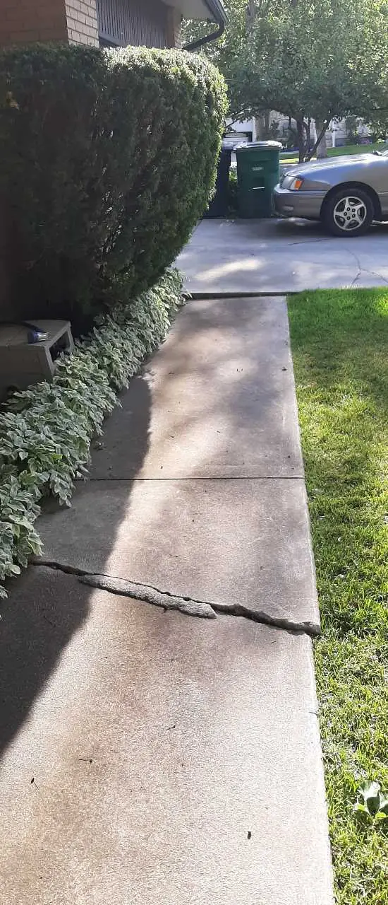
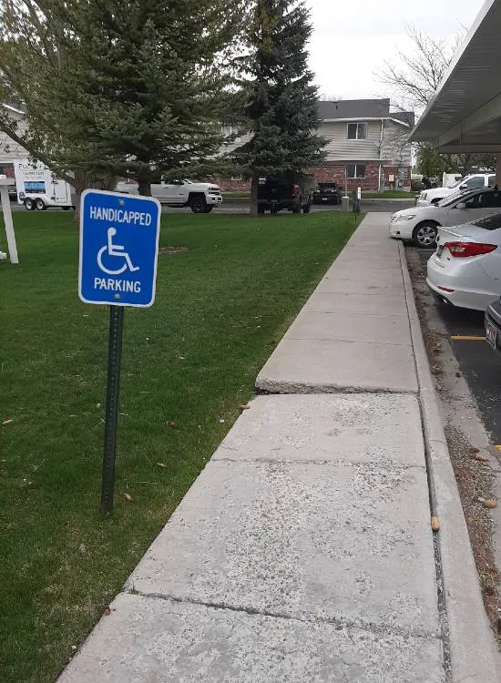
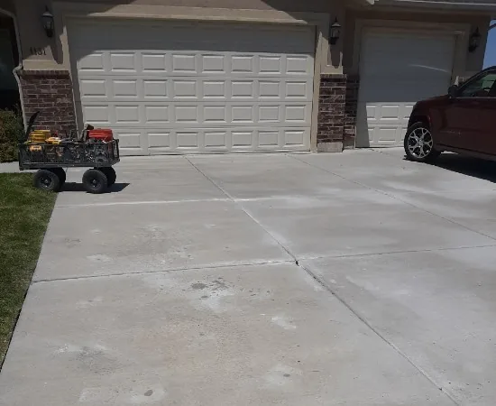
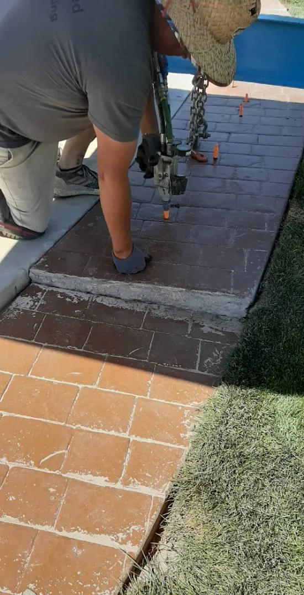
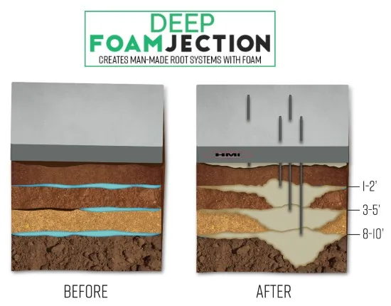
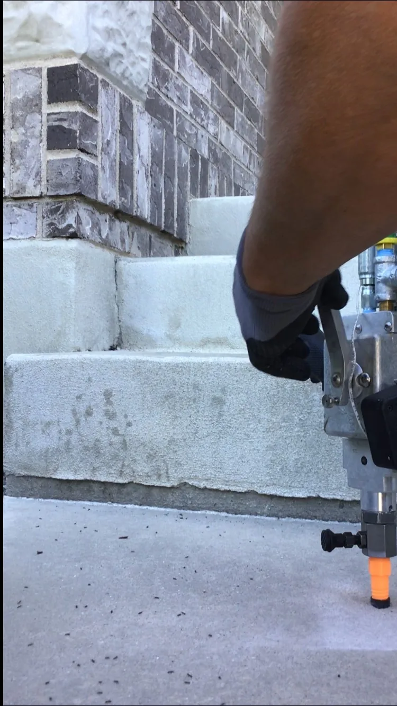

Poly-Lift provides concrete leveling & lifting in Logan, across Cache Valley and in Davis County, from our Logan office. Call the Cache location at (435) 999-9309 or the Weber location at (801) 530-5617.
The stability of a concrete slab depends on how compact its base is. If the base materials have not been compacted correctly before pouring, this leads to unstable settling. The concrete gets heavier as it cures, and this weight will continue to add to the problem. As a result, settlement kicks in, and it can happen pretty quickly.
Climate
The freeze and thaw cycle experienced in many regions causes the ground underneath the slab to expand when frost is present. This in turn will cause slabs to heave or raise. When the frost melts the slabs will settle and most often not to their original elevation. Slabs may become uneven resulting in trip spots. Drought often causes soil, such as expansive clays to shrink causing settling issues for concrete slabs. When expansive clay soils encounter wet conditions, they may swell leading to shifting concrete that needs leveling.
Erosion
Many different factors can lead to eroded base materials under concrete. Damaged water lines or sewer lines can lead to washout of base materials causing slabs to settle. Improperly placed downspouts can cause pooling of water, which can lead to erosion.
Machine/Traffic Vibrations
Concrete slabs may move or settle in industrial/highway settings where movement and heavy loads are present. The vibrations from the machinery and passing traffic can lead to the base compacting and the slab's settling or slab movement.
Slab Curl
Slab curl occurs when a relatively large section of concrete is poured. During the curing process, the top of the slab may cure slightly faster. This leads to slabs that curl and may rock and become unstable. Vibration may also cause slabs to eventually settle.
Slab stabilization is often required when slabs lack support, but may or may not be settled. Slabs can crack when loads exceeding its capacity are applied. Slab/joint stabilization applications require the voids to be filled to eliminate slab movement and offer support. HMI foam specifically designed for joint/slab stabilization has a very long reaction time and minimal expansion strength. It will take longer to expand, allowing for better coverage under the slab or down a void along a joint.
Void Filling
Concrete settling is not the only issue that HMI Foam can solve. Voids under slabs are often present in areas where wash out or excessive settling can occur. HMI material will weigh on average 15-25 times less than a traditional mud jacking or cementitious grout mix. This lightweight material will put less stress on an already failed sub-grade. The process of drilling, port installation, and injecting the material is the same as the raising process. All dual component polyurethane foams create heat when installed. Void fills must be done in a layering method to allow heat to dissipate safely.
Replacement
This method may lead to downtime for businesses, loss of productivity, and lost revenues. It is very time-consuming and the most expensive. You may have to worry about the color, for the new slab will not match the existing adjacent concrete.
Grinding
This is an inexpensive option that is unattractive. Grinding exposes aggregate in the concrete which makes this unappealing. The integrity and strength of the slab are also compromised when using this method. Slabs that continue to settle after grinding cannot be raised back to their original levels.
The Deep Foamjection Way
What we do is inject polyurethane foam beneath your concrete and raise it up that way. The foam strengthens the soil, giving the concrete a more sure foundation which in turn makes it less likely to sink in the future. Here are the steps of our process
A 5/8” hole is drilled all the way through the concrete slab into the ground, or sub-grade.
A tapered delivery port is then installed in the 5/8”hole.
The injection equipment, which delivers the dual component polyurethane material, is then connected to the port.
Material is then injected through the port and under the slab.
Expansion of the material occurs within seconds, compressing loose soils and raising concrete. Raising concrete with polyurethane foam is done with controlled incremental injections. Lifting foam will fully expand within 10-15 seconds. This allows the applicator to monitor the raise and prevents over raising the slab. HMI suggests using air purged equipment to deliver foam under the slab. This equipment will keep the injection port open between injections, allowing for the installer to wait for the foam to fully expand before injecting more material.
The process of raising concrete with HMI foam is inexpensive when compared to replacement.
Repaired areas are ready within minutes to be utilized, as they were intended to be. Ease of process, material, and clean-up are advantages over traditional mud jacking repairs made with grout.
From our jobs






Common questions
01Why is Uneven Concrete a Problem?
It is unsafe to have raised concrete.
02Why Does Concrete Settle?
There are several reasons why concrete settles. Here are some of the following:
03How Should I Repair My Settled Concrete?
There are several ways you can repair your concrete problem.